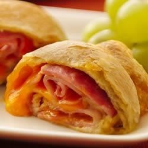

Ham and Cheese Crescent Roll-Ups

Description
Ham and Cheese crescent add an easy wow to a weeknight dinner, ready in just 25 minutes.
- 1(8 ounce) can Pillsburry Refrigerated Crescent Dinner Rolls
- 8 thin slices cooked ham
- 4 thin slices Cheddar cheese, cut into strips
Steps:
- Heat oven to 350 degrees F. Separate dough int 8 triangles. Place 1 piece of ham on each triangle; place 2 strip of cheese down cnter of ham. Fold in edges of ham to match shape of dough triangle.
- Roll up each crescent, ending at tip of triangle. Place with tips down on ungreased cookie sheet.
- Bake 15 to 19 minutes or until golden brown. Immediatly remove from cookie sheet. Serve warm.